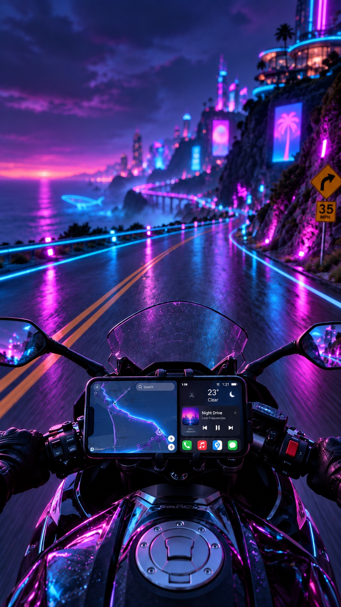
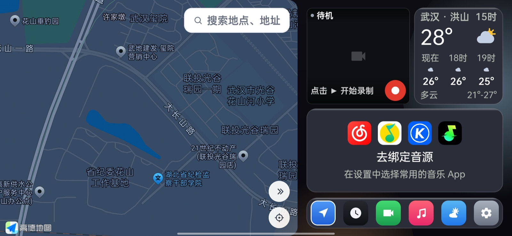
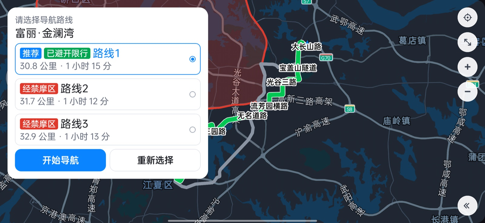
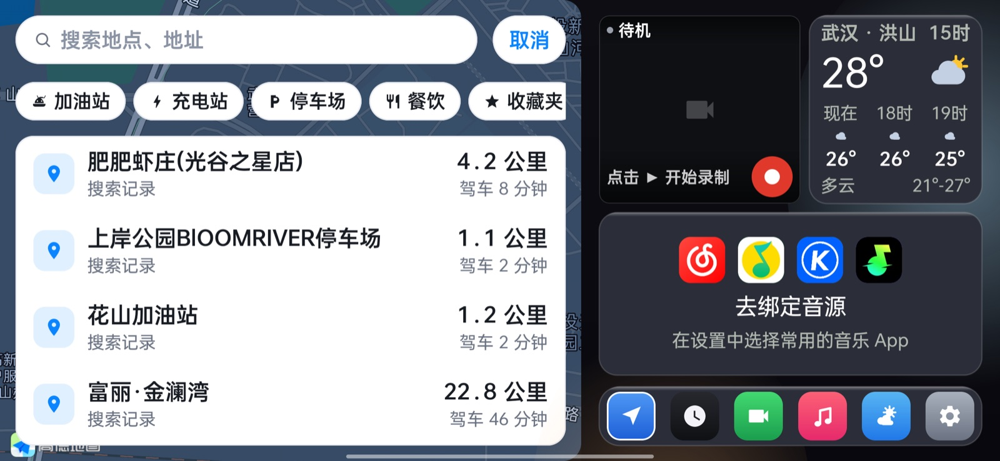

免费使用 · Android 10+ · 手机 / 平板全适配
把手机变成
把手机变成
你的摩托车仪表台
MotoGo 是专为骑行打造的车机导航启动器：高德导航、实时天气、本地音乐、行车记录，尽在一块玻璃质感的全屏界面中，出发即启程。
下载 APK
iOS 版 · 敬请期待

—
当前版本
10+
Android 系统要求
全适配
各类型号手机 / 平板
100%
免费使用
FEATURES
为骑行场景而生
每一项功能都围绕「骑行中如何更好用」设计：大按钮、大字号、玻璃质感、少分心。
高德地图导航
内置高德导航引擎，多备选路线、转向播报、限速提醒与红绿灯读秒，专为车机横屏场景深度优化。
SOON
禁摩区智能避让
内置 99 城禁摩区数据，路线自动检测穿区并智能绕行；目的地就在区内时不瞎绕路，只做温和提醒。
实时天气
基于定位的实时天气与温度展示，出发前一眼掌握沿途气候变化，风雨预判更从容。
音乐音源回显
网易云 / QQ音乐 / 酷狗 / 汽水四源任选，骑行中回显封面、曲名与进度，直接控制播放与切歌。
SOON
Turbo 仪表
压弯 / 翘头实时角度与行程极值、罗盘、气压计海拔，一键进入全屏仪表化骑行界面。
行车记录
行车视频随手录制，记录沿途风景与路况影像，旅途中的每一公里都值得留存。
SOON
胎压监测
连接蓝牙胎压传感器，四轮胎压胎温实时一览，漏气 / 充气状态即时告警。
蓝牙耳机连接
蓝牙音频设备连接管理，导航播报与音乐直达头盔耳机，双手不离把也能听清每一次转向。
玻璃质感车机 UI
全套毛玻璃拟态界面，层级清晰、对比充足，阳光直射下依然易读，戴手套也能准确触控。
REAL UI
真实车机界面
以下截图来自真机上运行中的 MotoGo：夜间导航、路线规划与智能搜索。



CHANGELOG
持续进化
小步快跑，每周都在变好。以下为用户可见的主要更新。
v1.40
即将推送
2026-09-18
- 音乐模块重构：网易云 / QQ音乐 / 酷狗 / 汽水四音源任选，卡片实时回显封面、曲名与进度
- 导航新增 HUD 码表与转向提示卡，接近转弯自动滑入
- 路线偏好七选一，新增「避开限行」开关
- 地图新增 99 城禁摩区域可视化，路径规划自动检测穿区并提示风险路线
- 搜索新增历史记录（自动去重置顶）与分类即搜
- 设置页全新改版：外观日 / 夜 / 随系统三态，新增模糊特效开关
- 接入高德红绿灯读秒
- 提升旧机型运行稳定性，修复部分 Android 10 及以下机型闪退
开发中 · 即将上线
- Turbo 模式：压弯 / 翘头实时仪表、罗盘海拔与全屏仪表化导航
- 禁摩区智能避让：路线穿区自动绕行，目的地在区内智能跳过
- 胎压监测：蓝牙胎压传感器实时胎压胎温与漏气告警
SUPPORT
支持 MotoGo
MotoGo 全部功能免费、无广告。如果它为你的骑行带来了便利，欢迎请作者喝一杯。
你的赞助是持续更新的动力
MotoGo 由个人开发者在业余时间维护，服务器、禁摩区数据与后续功能迭代都需要长期投入。
- 赞助将用于服务器与地图数据服务成本
- 支持后续新功能开发与更快的问题响应
- 金额不限，随手一杯咖啡即是莫大鼓励